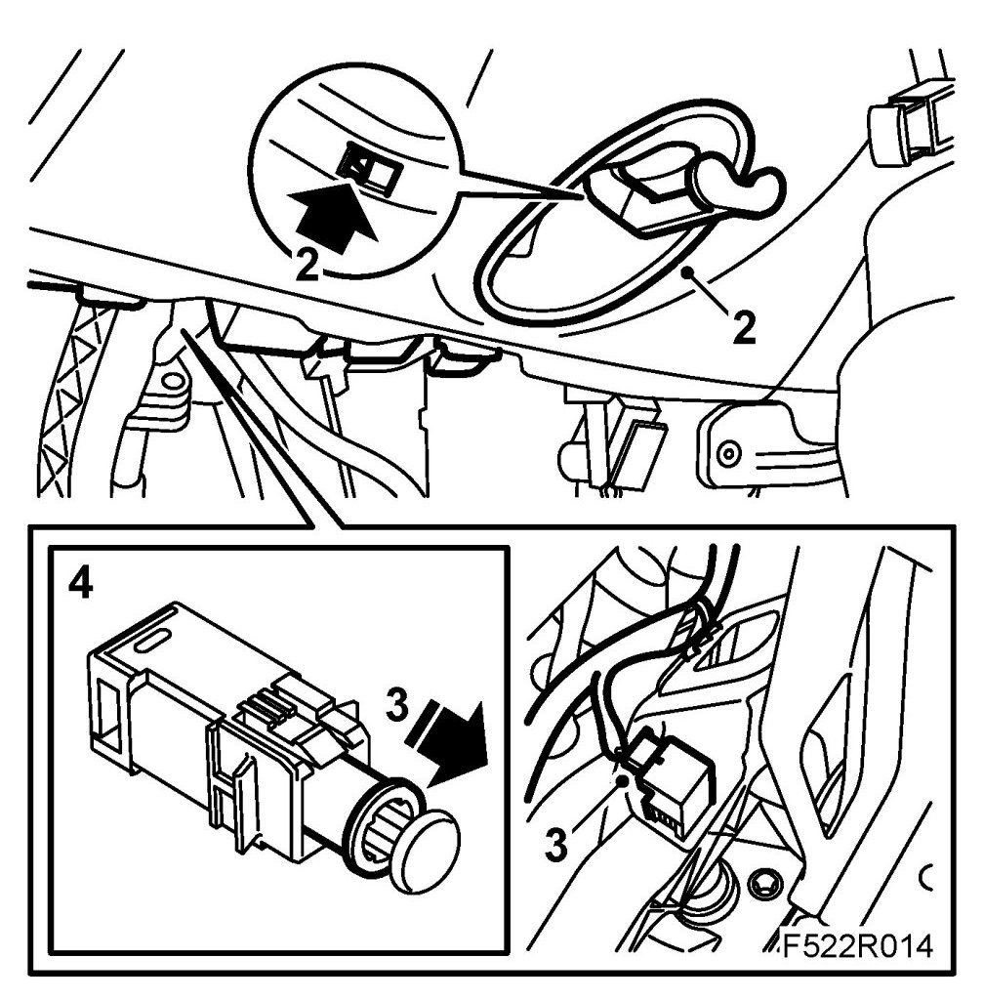
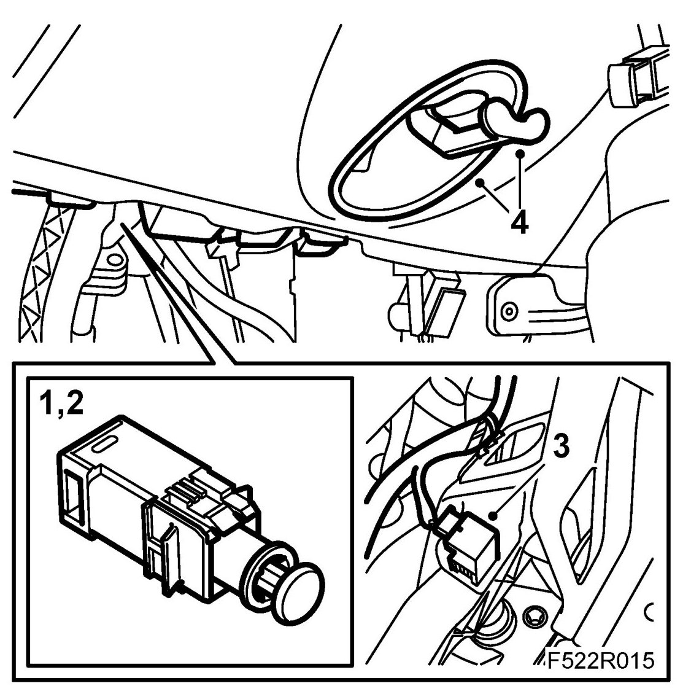

Clutch Switch: Service and Repair
Clutch Switch, Cruise Control (133)
To remove
1. Remove the sound insulating baffle on the driver's side.
2. Remove the handle and cover for steering wheel adjustment.

3. Press down the clutch pedal as much as possible. Pull out the switch's pushrod and locking sleeve.
4. Press in the catch and remove the switch.
5. Unplug the connector.
To fit
1. Plug in the connector.

2. Pull out the switch's pushrod and locking sleeve.
3. Press down the clutch pedal as much as possible and fit the switch.
NOTE: The switch should fit in the coding in the bracket.
Press in the locking sleeve.
4. Press down the clutch pedal as much as possible and pull out the switch's pushrod. Release the pedal.
5. Fit the sound insulating baffle on the driver's side.